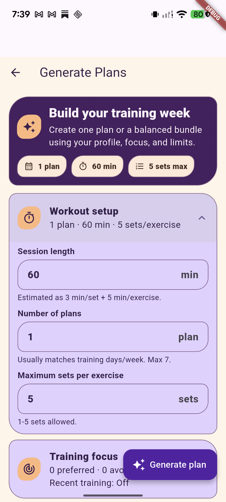
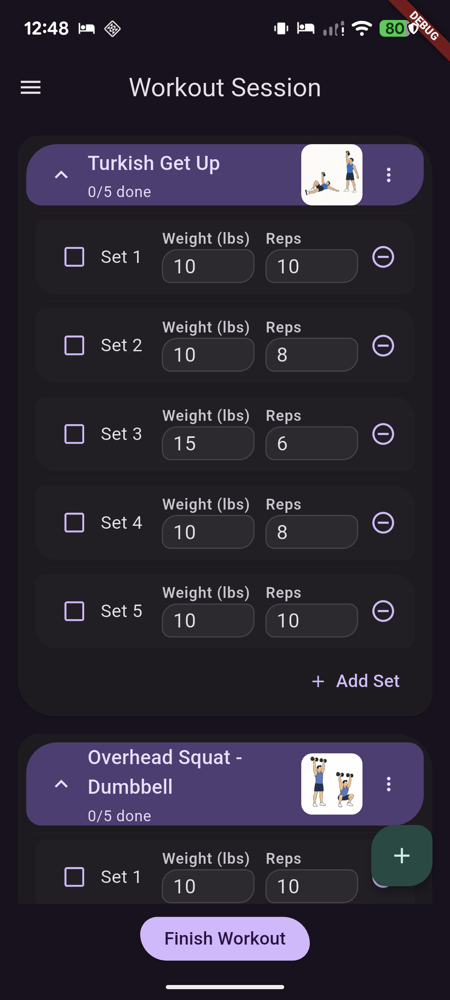
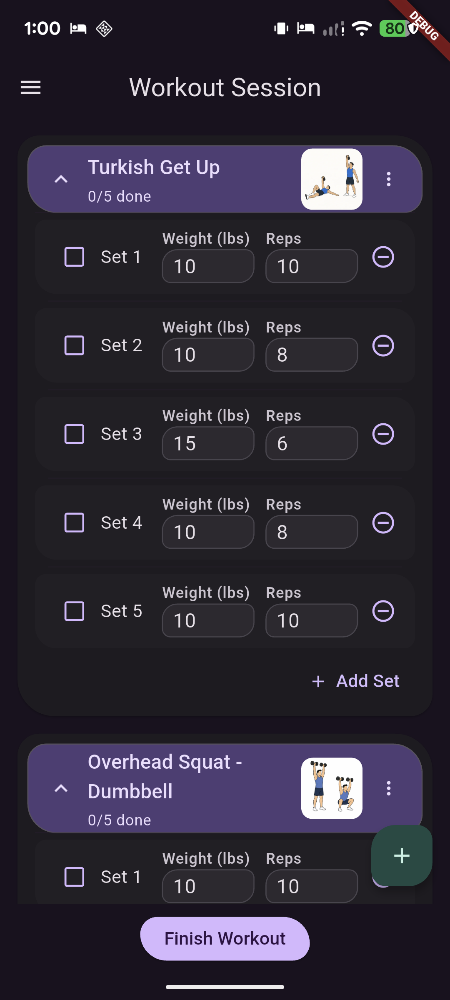
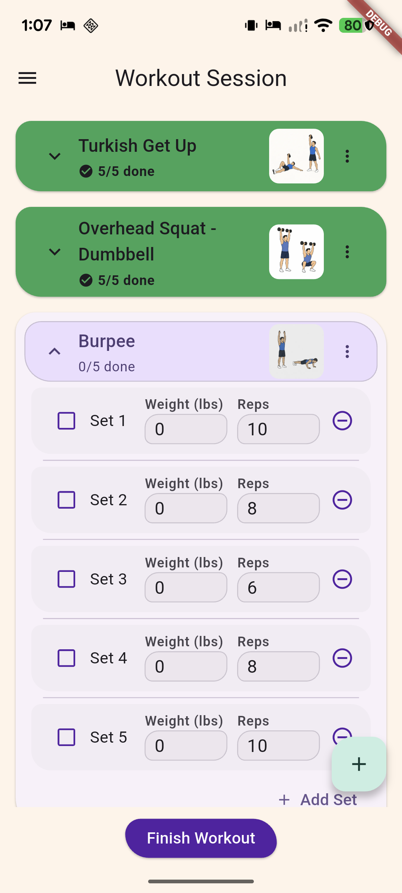
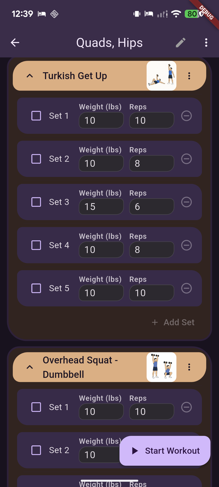
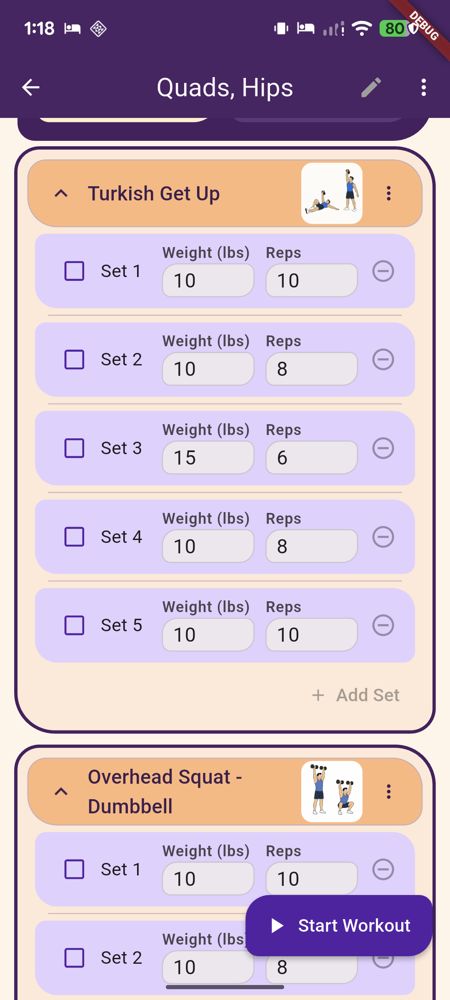

Accordion style: before, after & what’s next
One place to review the Expressive inset-header work and the remaining places where the same design language might help. Click any screenshot for its original size.
How to read this: “Before” captures precede the change. “Finishing pass” and “current capture” images show the later header-alignment and spacing corrections. The workout trial and reverted experiments are explicitly labeled. Different scroll positions and sample data can affect a pair. These images do not change visual or motion approval.
Generate Plans and exercise cards
Generate Plans supplied the reference: a contained header inside the expanded card. The same idea was adapted to exercise headers while retaining each screen’s palette and controls.


Active workout · dark
The after image is the initial inset-header trial. The later light capture shows the subsequent removal of the divider beneath the header.




Later workout capture · divider removed


Plan / preset exercise cards
These captures show the same plan and exercises, but use different themes. Compare the header shape rather than color; a matched-theme pair was not archived.




Exercise Details
Form guide, Equipment and Target anatomy use the inset treatment. Light-mode pairs show Turkish Get Up before and after; scroll position and media framing vary.
Dark · after
No matching dark before capture of Turkish Get Up was recorded. The original baseline gallery has an earlier Ab Wheel dark example.
Full guide content and original review

Remaining candidates
These are suggestions for consideration, not approved changes. Images show the existing state or the nearest available historical context; no proposed after images exist yet.
Workout Report → Additional details
Progress tab and Dashboard. This is the strongest stand-alone candidate for a contained inset header and body. The 26 October baseline shows both collapsed and expanded states.
Workout Progress Rules → nested cards
Profile defaults and individual active/archived plan-rule cards are inside the already-adapted outer gym card. Consider a quieter, compact version that keeps the hierarchy clear.
Customize Food / Edit Food → nested groups
Consider a compact treatment for the two Portion Info groups and for nutrient breakdowns, including Protein, Carbs, Fats, Vitamins, Minerals and their nested components. Keep inputs wide and avoid stacking heavy outlines.
Other, smaller show-more controls
- Onboarding → Workout Space → included equipment: show all / show less.
- Profile → Diagnostics & Privacy → sync history: show all / show less.
- Train and Dashboard → plan lists: show more plans.
These are list-reveal controls rather than full accordions; matching their motion and spacing may be sufficient. The archived Train capture shows its control; the onboarding and diagnostics captures only show page context, with the controls below the visible area. These older images may differ from the current screens.
Premade Plans and Gym Profile / Equipment
You preferred the earlier versions and the experiment was reverted. These pairs are historical references, not proposed after screenshots or current app captures. Any new attempt would need a fresh review.
Premade has three levels: source, category and individual plan. Gym Equipment has category groups. The Premade before image is an older archive with unrelated toolbar, spacing and filter differences; compare accordion shapes cautiously.